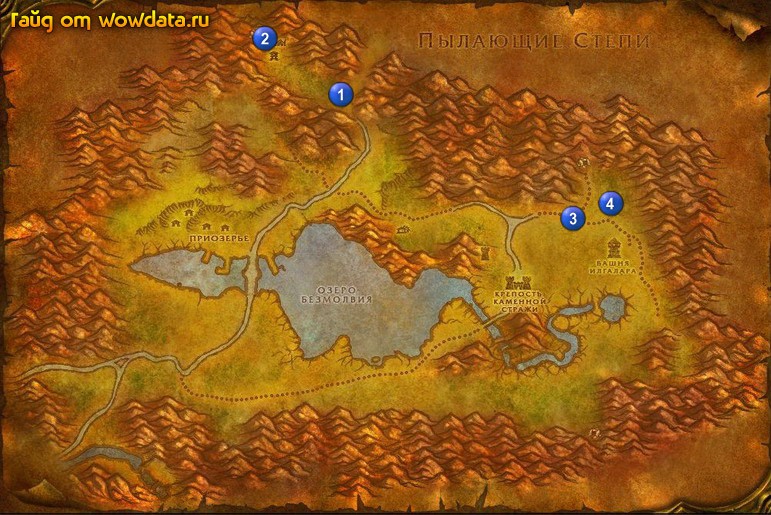

1) Справа от пункт полета начните <Награда за головы орков Черной горы> (у моста).
2) Начните <Угроза Черной горы> через мост.
3) В ратуше начните <Закон Соломона>.
4) У гостинице начните <Разыскивается: лейтенант Фангор>.
5) Сделайте Приозерье вашим домом.
6) В западной части города у крайнего дома начните <Незваный гость>, затем идите дальше на запад и делайте квест – убейте Грубобрюх, теперь вернитесь и закончите его.
7) Идите в лагерь 1 (44, 19) и бейте орков для <Угроза Черной горы>, затем идите на северо-запад 2 (34, 7) и делайте <Награда за головы орков Черной горы> - лучше делать в пещере.
8) Возвращайтесь в Приозерье. Закончите <Угроза Черной горы>, игнорируйте <Тарил'зун>.
9) Через мост закончите <Награда за головы орков Черной горы>.
10) Бейте темношкуров 3 (74, 42) для <Закон Соломона>, так же делайте тут <Разыскивается: лейтенант Фангор> 4 (80, 40), только предварительно убейте всех мобов вокруг, а то они сбегутся.
11) Теперь бейте тут мобов пока у вас не останется 4к хр до лвл (2 бара).
12) По руне вернитесь в Приозерье.
13) В ратуше закончите <Закон Соломона> и <Разыскивается: лейтенант Фангор>, после чего вы должны стать 28 лвл.
14) Летите в Штормград и выучите скиллы. Затем отправляйтесь по дороге в Сумеречный лес.